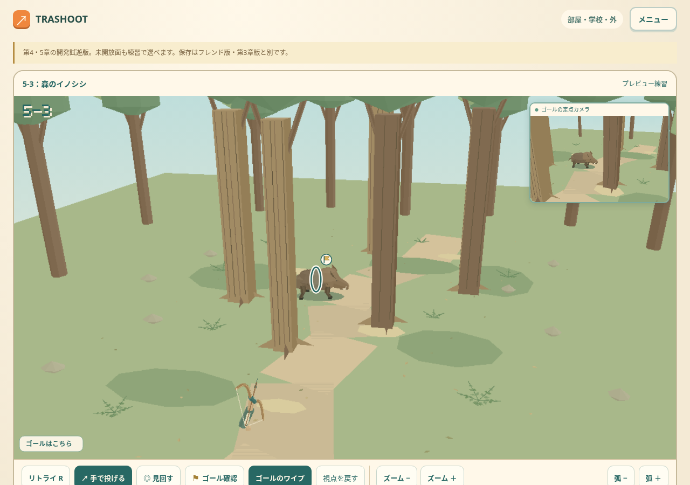
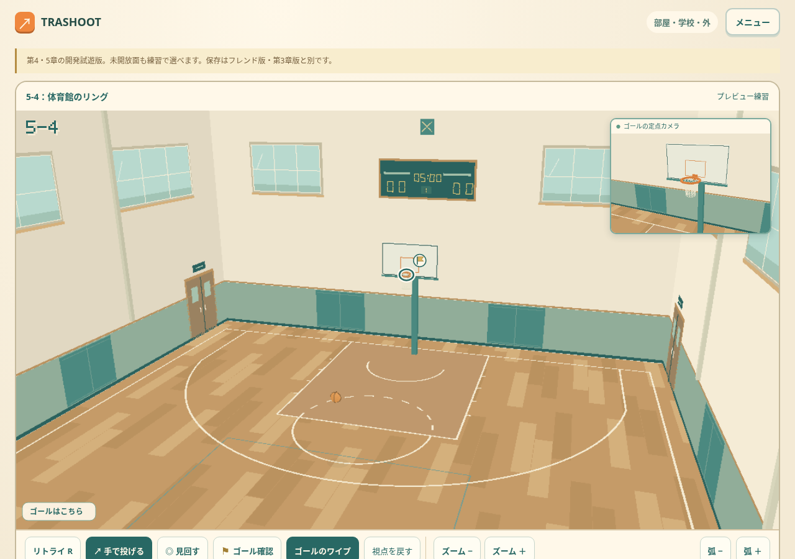
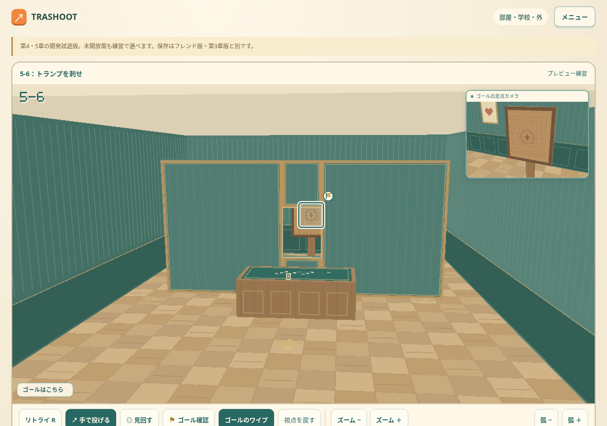

 ＋ 画面を拡大 5-3 / 森 木々の間を、追いかけて。 森を歩くイノシシは、足を進める向きへ体を変えます。木々の隙間と動きを見ながら、弓を構えて矢を放とう。 森の弓矢を遊ぶ ↗
 ＋ 画面を拡大 5-4 / 体育館 屋根の下で、きれいな弧を。 窓の光が入る体育館で、リングへシュート。壁や天井にも気を配りながら、ボールの通る道を探そう。 体育館のバスケを遊ぶ ↗
 ＋ 画面を拡大 5-6 / 客間 細い隙間へ、一枚。 落ち着いた客間で、薄いカードを投げて刺す。仕切りの開口とカードの姿勢を見て、すっと通る一投を狙おう。 客間のカードを遊ぶ ↗